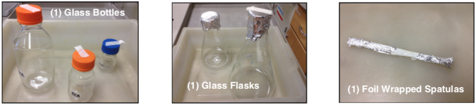

Autoclave Operation
Make sure lab items you want to sterilize are autoclavable.
| Autoclave-Compatible | Autoclave-Incompatible |
|---|---|
| Tissue Culture Flasks | Acids, bases, and organic solvent |
| Surgical Instruments | Chlorides, sulphates |
| Glassware | Seawater |
| Pipette tips | Chlorine, hypochlorite, bleach |
| Media Solutions | Non-stainless steel |
| Animal food and bedding | Polystyrene (PS) |
| Waste | Polyethylene (PE) |
| Polypropylene (Secondary containers) | Low density (LDPE) and High density polyethylene (HDPE) |
| Stainless steel | Polyurethane |
| Gloves |
Never autoclave:
-
Flammable, reactive, corrosive, toxic, or radioactive materials
-
Household bleach
-
Any liquid in a sealed container
-
Any material contained in such a manner that it touches the interior surfaces of the autoclave
-
Paraffin-embedded tissue
If you are not sure if something can be autoclaved, ask a fellow lab member.
Preparing Items for Autoclaving
Dry (Empty) Glassware
If you are sterilizing empty, dry glass labware, autoclave-safe plastic labware, foil-wrapped items, or any other non-liquid item, follow these steps:
-
Glass bottles with caps- washed, air-dried completely, capped with cap half-loosened, autoclave tape on top of lid.
-
Plastic large centrifuge bottles with caps- washed, air-dried completely, capped with cap very loosely covering the opening and NOT tightened, autoclave tape on top of lid.
-
Glass test tubes with caps- washed, air-dried completely, capped firmly, put in non-labeled rack, autoclave tape on front of rack.
-
Plastic pipet reservoirs/basins- washed, air-dried completely, wrapped in heavy-duty aluminum foil with no exposed corners or edges, one piece of autoclave tape on the whole batch only.
-
Chunking spatulas or other glass/metal utensils- washed, air-dried completely, wrapped in aluminum foil with no exposed corners or edges, one small piece of autoclave tape on each item.
-
Glass or plastic containers with no lids (flasks, beakers, etc.)- washed, air-dried completely, covered in heavy-duty aluminum foil with no holes and aluminum hanging at least 1 inch over the edge of the opening, autoclave tape on top of the foil cover.

Glassware Containing Liquids
If you are sterilizing liquids in a container with a lid (bottles & tubes) or covered with aluminum foil (glass flasks & beakers), follow the steps here:
-
Glass bottles with caps containing liquid media, water, or buffers- liquid filled no more than container fill-line, capped with cap slightly-loosened one turn to prevent loss, autoclave tape on top of lid.
-
Glass bottles with caps containing liquid media with agar- liquid filled no more than HALF-VOLUME of the container, capped with cap slightly-loosened one turn to prevent loss, autoclaved tape on top of lid.
-
Glass test tubes with caps containing liquid media, liquid media with agar, water, or buffers- liquid filled no more than ⅔ full, capped firmly, put in labeled rack, autoclave tape on front of the rack.
-
Glass or plastic containers with NO LIDS containing liquid media, liquid media with agar, water or buffers (flasks, beakers, pitchers, etc.)- liquid filled no more than HALF-VOLUME of the container, covered in heavy-duty aluminum foil with no holes and aluminum hanging at least 1 inch over the edge of the opening, autoclave tape on the side of the foil cover overlapping on the glass to secure the foil.
Autoclaving Items
Round Hatch Autoclave
-
Write your name on the chalkboard next to the autoclave you will be using to reserve the autoclave for your use. Also record your use in the log book.
-
Turn the autoclave dial to "Load" 5-10 min. before loading to get the jacket pressure between 15-20 psi.
-
When the jacket pressure has reached 15-20 psi, load the bin with your lab items and close the door. To ensure the door is sealed shut, turn the hatch clockwise until absolutely tight (some autoclaves require very tight seals!).
Note: Use the orange heat-protection gloves to protect yourself from the heat of the autoclave anytime you are opening the autoclave and inserting/removing items.
-
Wait in the room for 5 min. after initiating sterilization to ensure the door is sealed adequately and no water is leaking out. If there is a leak, tighten the hatch further. Also ensure the chamber pressure reaches 15-20 psi. If the leak does not stop, abort the run (turn dial to "liquid cool" or "vent") and notify Jesse Waters at jesse.waters@wisc.edu to generate a work order.
-
Allow sterilization for 5-10 min. more than the desired sterilize time (this allows for complete sterilization after the chamber has reached 15-20 psi).
-
When sterilization is complete, turn the dial to "liquid cool" (if sterilizing liquids) or to "vent dry". Wait for the pressure to drop to 0 (usually takes about 10 min. after dial turn) before opening the door (turn hatch counter-clockwise). Stand back behind the hatch while opening the door in order to avoid burn injury from escaping steam.
-
Turn the dial to "Off". Use heat-protection gloves to take the bin out of the autoclave. Place the bin on a cart to take it to the lab. Return gloves to the autoclave when finished.
Steris Autoclave
-
Press the foot petal to open the autoclave.
-
Slide the rack out to load items easier and then load items to be autoclaved.
-
Press the foot petal to close the autoclave.
-
Press the "Select Cycle" tab on the screen.
-
Select your desired cycle for autoclaving.
-
Press the "Start" tab on the screen.
-
Record use in the #3 binder on the bench behind the autoclave.
-
When the cycle is complete, press the foot petal to open the autoclave.
-
Use the heat resistant gloves to remove the items.
-
Press the foot petal to close the autoclave.
Primus Autoclave
-
Pull the door down and load items.
-
Close the door by pulling up slowly.
-
Follow the printed instructions on the left side of the autoclave.
-
Record your use in the log binder behind the autoclave.
-
When the cycle is complete, use heat resistant gloves to remove your items.
-
Close the door almost all of the way but leave a small crack open.